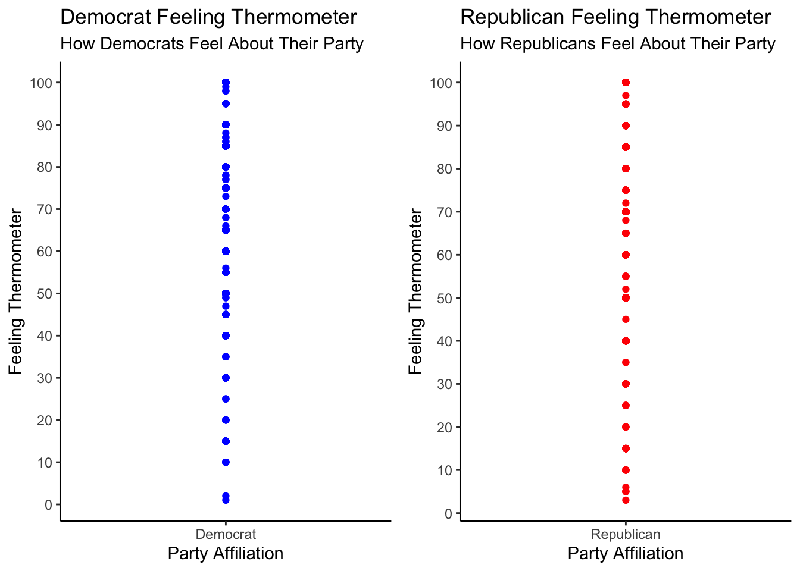

── Attaching packages ─────────────────────────────────────── tidyverse 1.3.2 ──
✔ ggplot2 3.3.6 ✔ purrr 0.3.4
✔ tibble 3.1.8 ✔ dplyr 1.0.10
✔ tidyr 1.2.0 ✔ stringr 1.4.1
✔ readr 2.1.2 ✔ forcats 0.5.2
── Conflicts ────────────────────────────────────────── tidyverse_conflicts() ──
✖ dplyr::filter() masks stats::filter()
✖ dplyr::lag() masks stats::lag()
Attaching package: 'gridExtra'
The following object is masked from 'package:dplyr':
combineindex
Loading packages
Loading data
ANES_2020<-read_csv("data/2020_ANES.csv")Warning: One or more parsing issues, see `problems()` for detailsRows: 8280 Columns: 1771
── Column specification ────────────────────────────────────────────────────────
Delimiter: ","
chr (20): version, V203001, V203054, V203056, V203078, V203079, V203080, V...
dbl (1751): V200001, V160001_orig, V200002, V200003, V200004, V200005, V2000...
ℹ Use `spec()` to retrieve the full column specification for this data.
ℹ Specify the column types or set `show_col_types = FALSE` to quiet this message.#Feeling thermometer of Democrats
democrats_ANES_2020<-filter(ANES_2020,V201018==1)
democrats_ANES_2020<-filter(democrats_ANES_2020,V201156>0&V201156<998)
#Feeling thermometer of Republicans
republicans_ANES_2020<-filter(ANES_2020,V201018==2)
republicans_ANES_2020<-filter(republicans_ANES_2020,V201157>0&V201157<998)Visualization 1: Feeling Thermometer
Visualization 1.1: Democrat feelings towards Democrats
feeling_thermometer_democrats<-
ggplot(data=democrats_ANES_2020, aes(x=V201018,y=V201156))+
geom_point(color="blue")+
scale_x_continuous(breaks=seq(1,1,by=1),
labels=c("1"="Democrat"))+
scale_y_continuous(breaks=seq(0,100,by=10))+
xlab("Party Affiliation")+
ylab("Feeling Thermometer")+
ggtitle("Democrat Feeling Thermometer", "How Democrats Feel About Their Party")+
theme_classic()
feeling_thermometer_democratsVisualization 1.2: Republican feelings towards Republicans
feeling_thermometer_republicans<-
ggplot(data=republicans_ANES_2020, aes(x=V201018,y=V201157))+
geom_point(color="red")+
scale_x_continuous(breaks=seq(2,2,by=1),
labels=c("2"="Republican"))+
scale_y_continuous(breaks=seq(0,100,by=10))+
xlab("Party Affiliation")+
ylab("Feeling Thermometer")+
ggtitle("Republican Feeling Thermometer", "How Republicans Feel About Their Party")+
theme_classic()
feeling_thermometer_republicansComplete Visualization 1
grid.arrange(feeling_thermometer_democrats,feeling_thermometer_republicans,ncol=2,nrow=1)
Summary of visualization 1
The visualization created shows how respondents who identify as Democrats feel towards other Democrats as well as how respondents who identify as Republicans feel towards Republicans. As seen in the visualization, it is clear that Democrats think more highly of Democrats than Republicans do of Republicans. This can be seen through the clustering towards the more positive feelings, around the mid 70s and higher on the feeling thermometer as opposed to the Republican graph which indicates less clustering in general.
Visualization 2: Who Donates to Individual Candidates More?
Visualization 2.1: Democrats Who Donated Money
Cleaning the data
#Democrats who donated money
democrat_donations<-filter(ANES_2020,V201018==1)
democrat_donations<-filter(democrat_donations,V202017>0)
count(democrat_donations,democrat_donations$V202017==1)# A tibble: 2 × 2
`democrat_donations$V202017 == 1` n
<lgl> <int>
1 FALSE 1157
2 TRUE 531dem_donations<-as.data.frame(table(democrat_donations$V202017))
colnames(dem_donations)[1]<-"Donated"
colnames(dem_donations)[2]<-"Count"Graph
dem_donations_graph<-
ggplot(data=dem_donations,
aes(x=Donated,y=Count))+
geom_bar(stat="identity", fill="blue")+
scale_x_discrete(labels=c("1"="Donated","2"="Didn't Donate"))+
geom_text(aes(label=Count), hjust=0, size=4)+
xlab("Did Respondent Donate?")+
ylab("Number of People")+
ggtitle("Donations by Democrats",
"Number of Democrats Who Donated to a Candidate vs. Did Not Donate")+
theme_classic()+
coord_flip()
dem_donations_graphVisualization 2.2: Republicans Who Donated Money
Cleaning the data
republican_donations<-filter(ANES_2020,V201018==2)
republican_donations<-filter(republican_donations,V202017>0)
count(republican_donations,republican_donations$V202017==1)# A tibble: 2 × 2
`republican_donations$V202017 == 1` n
<lgl> <int>
1 FALSE 961
2 TRUE 232republican_donations<-as.data.frame(table(republican_donations$V202017))
colnames(republican_donations)[1]<-"Donated"
colnames(republican_donations)[2]<-"Count"Graph
republican_donations_graph<-
ggplot(data=republican_donations,
aes(x=Donated,y=Count))+
geom_bar(stat="identity", fill="red")+
scale_x_discrete(labels=c("1"="Donated","2"="Didn't Donate"))+
geom_text(aes(label=Count), hjust=0, size=4)+
xlab("Did Respondent Donate?")+
ylab("Number of People")+
ggtitle("Donations by Republicans",
"Number of Republicans Who Donated to a Candidate vs. Did Not Donate")+
theme_classic()+
coord_flip()
republican_donations_graphComplete Visualization 2
grid.arrange(dem_donations_graph,republican_donations_graph,ncol=1, nrow=2)Summary of visualization 2
The second visualization shows the number of respondents who did and did not donate to an individual candidate in the 2020 election broken down by party. Looking at the two graphs next to one another, you can see that Democrats donated at a higher frequency than Republicans did. This does not speak to the amount donated by the respondents, but indicates that there were more individual donors among Democrat respondents than Republican respondents.